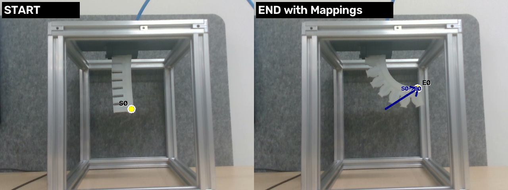
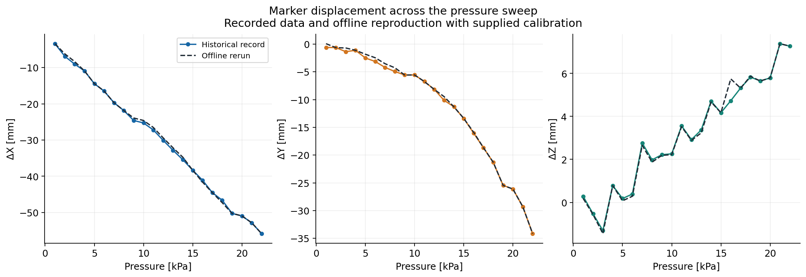
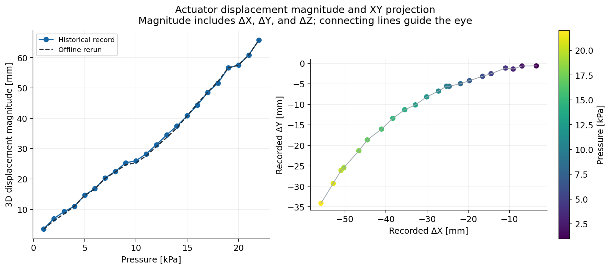
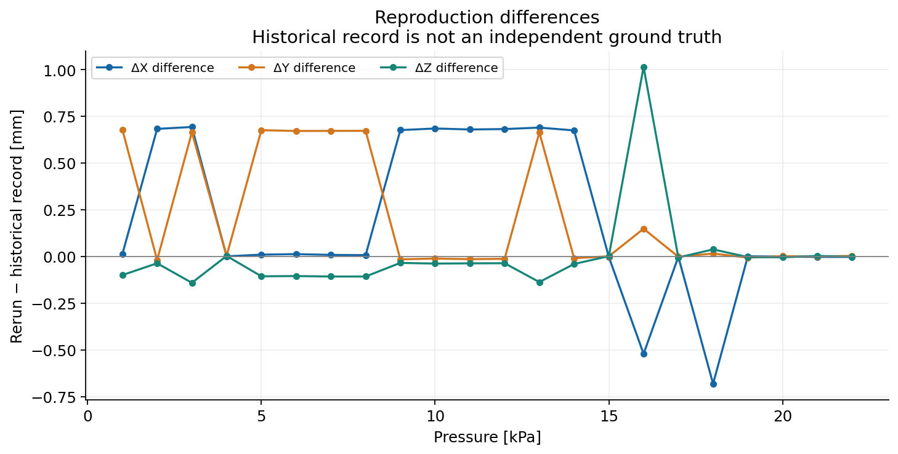

Camera Motion Tracking
Estimating three dimensional displacement of a soft robotic actuator from color and depth images. This demonstration reprocesses recorded experimental data to examine marker correspondence and displacement across a pressure sweep.
Python · OpenCV · Intel RealSense · Camera Calibration · Displacement Analysis
Context and attribution
This work was conducted within the USC Center for Advanced Manufacturing. My contribution focused on developing and calibrating a camera based measurement pipeline for three dimensional displacement estimation and validation. This page presents a local reproduction using the lab project code and recorded experimental images.
Purpose and Contribution
Soft robotic actuators deform as pressure changes. Tracking a visible marker and its corresponding depth provides an estimate of how that point moves in three dimensions relative to a reference configuration.
I developed and calibrated a camera based measurement pipeline for three dimensional displacement estimation and validation of soft robotic actuators. The pipeline combines marker detection and pairing, depth processing, camera calibration, coordinate transformation, and displacement analysis.
Marker Detection and Correspondence
The reference and endpoint images illustrate the marker correspondence used for displacement estimation. All 22 configured pressure cases produced one accepted 3D marker pair.

Three Dimensional Displacement
The pressure sweep spans 1–22 kPa. Each endpoint is compared with the same reference image, using the supplied calibration. Solid curves show the historical record and dashed curves show the offline rerun.

Displacement Magnitude and Spatial Response
At 22 kPa, the rerun gives a total three dimensional displacement magnitude of 65.835 mm. The spatial projection shows how the recorded displacement direction changes across the pressure sweep.

Measurement Workflow
- Detect and pair markers. Color segmentation and geometric filtering identify candidate markers. The configured pairing method associates the reference and endpoint detections.
- Evaluate depth. Local depth samples provide a depth estimate and consistency checks for each marker.
- Transform coordinates. Camera intrinsics convert pixel coordinates and depth into camera coordinates. The supplied extrinsic transformation maps these into the working coordinate frame.
- Calculate displacement. Subtract the reference position from the endpoint position and compare the result with the historical record.
Reproduction Comparison
The maximum difference between rerun and historical displacement vectors is 1.150 mm at 16 kPa. Several intermediate cases differ, although the endpoint result closely agrees. The cause of these differences has not been established.

Engineering Interpretation and Limits
This demonstration connects image processing, depth measurements, camera calibration, and coordinate transformations to displacement estimation. The figures document the processing workflow and its agreement with an existing displacement record.
The comparison measures reproducibility against the historical record, not independent sensor accuracy. An independent reference measurement and repeated trials would be needed to quantify accuracy and repeatability.